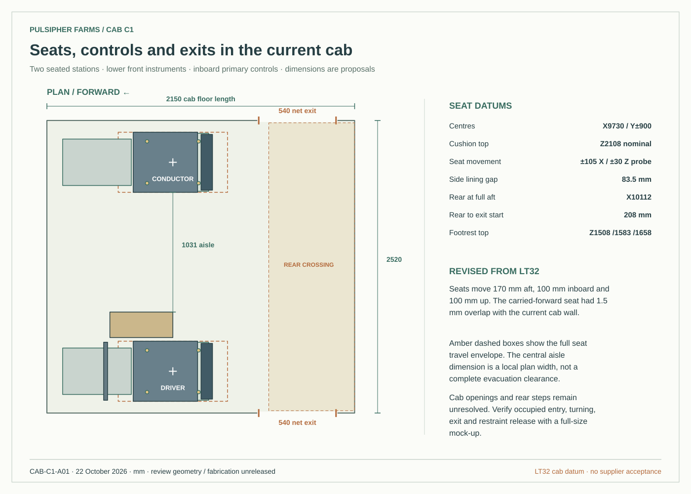
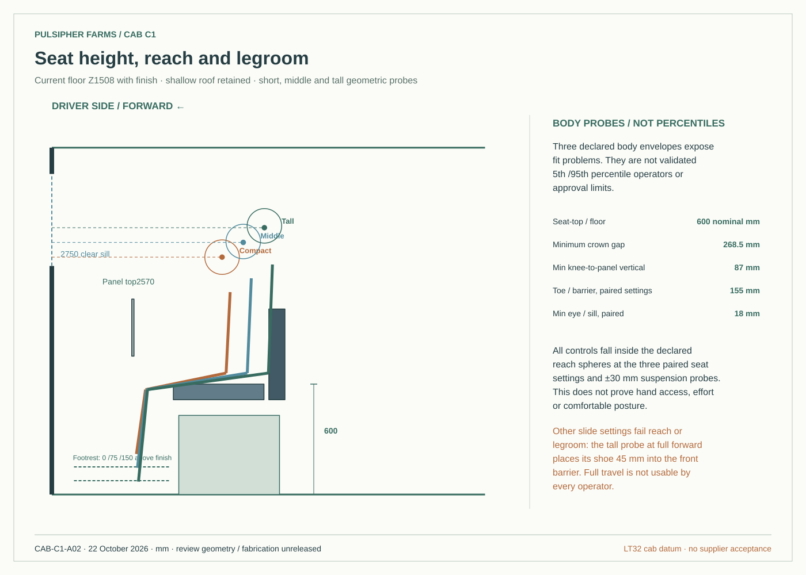
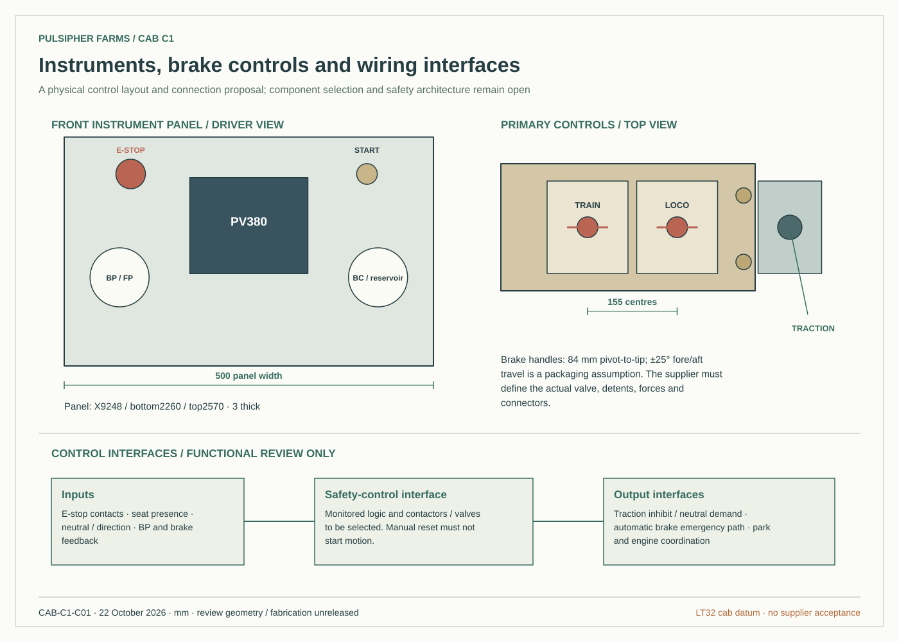
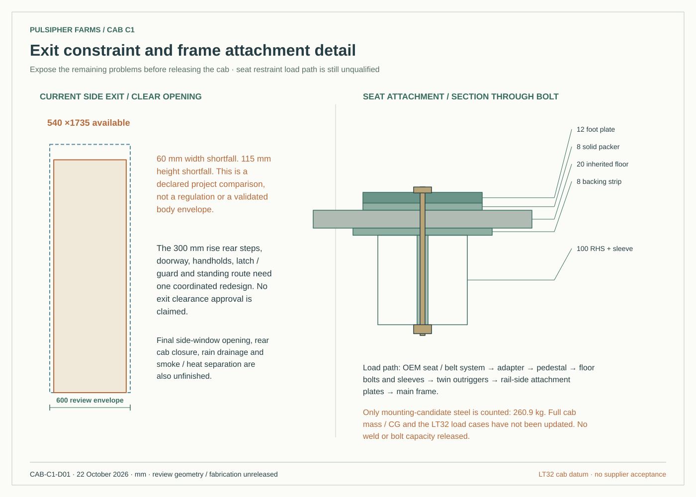

Superseded cab review. Open the current Cab C2 revision →
CAB C1 / CURRENT LT32 BODY
Inside the cab.
A dedicated operator-layout review in the current locomotive. Seats, controls and footrests are repositioned around the actual floor, roof and windows. Roof-off and driver-eye views expose what fits, what blocks the view, and what still needs a physical mock-up.
The interior is developed further; the cab is still unfinished. The side exits remain too narrow and low for the declared review envelope. Many ground sightlines are blocked. Actual brake equipment, restraint approval, wiring, ventilation performance and final mounting details remain open.
What changed
| Area | Cab C1 proposal | Remaining decision |
|---|---|---|
| Seats and driver space | Both seats move 170 mm aft, 100 mm inboard and 100 mm up. ±105 mm slide and±30 mm suspension probes; indexed footrest heights. | Exact seat / slide variant, body population, backrest angle, comfortable reach and occupied mock-up. |
| Seat-to-frame attachment | Pedestal, replaceable adapter, through-floor bolts, compression sleeves, outriggers and main-rail attachment plates are modeled. | Rated belt / seat load path, welds, fatigue, bolt specification and running-gear envelope. |
| Brakes and instruments | Separate train and locomotive brake handles; traction, direction, park, horn, key and emergency-stop positions; engine display and two pressure-gauge spaces. | Supplier control devices, force / travel / detents, actual pneumatic circuit and independent safety architecture. |
| Interior finish | Removable side and roof lining, non-slip floor allowance, shielded task lights, passive fresh-air louvers and high outlets. | Material ratings, fasteners, glare / lux, emergency lighting, heat / smoke sealing, airflow, rain and exhaust ingestion. |
| Cab air lines | Inherited above-floor BP / FP corridors are replaced in this cab proposal by underfloor corridors clear of the seat area. | New rear endpoints require an LT32 extension redesign. Neither the rear jumper study nor whole-train load cases is silently changed. |
Dimensioned review drawings
All dimensions are in millimetres. Open a sheet to inspect it at full size.




Mounting-candidate STEP (.gz) → · Checks, assumptions and supplier interfaces →